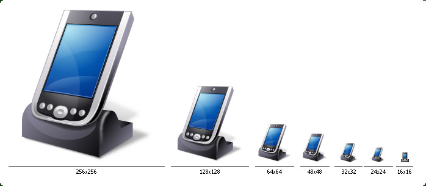

| Style: | Vista |
| Series: | Vista Style Icons |
| Count: | 74 |
| Variations: | 154 |
| Formats: | .PNG, .ICO on request |
| Colors: | TrueColor + Alpha |
| Sizes: | 16x16, 24x24, 32x32, 48x48, 64x64, 128x128, 256x256 |
| Price: | 110 USD |
This stylish set of readily available icons represent 74 items of modern electronic hardware such as Computer, Mouse, Flash Card, iPhone, Software, different kinds of Drives, Network Equipment, and more. The devices are pictured in Windows Vista style, making your applications always appear great. Your customers will immediately feel at home when they start your software enhanced with Devices Icon Set under the new Aero interface.
| # | Icon Name | Illustration | Var. | Meaning |
|---|---|---|---|---|
| 1 | Computer | Computer | 3 | Computer, Workstation |
| 2 | Server | Server | 1 | Server |
| 3 | Portable Computer | Portable Computer | 1 | Portable Computer |
| 4 | Display | Display | 3 | Display, Monitor, Touchscreen |
| 5 | Plasma | Plasma Display | 2 | Plasma Monitor, Plasma Display |
| 6 | Keyboard | Keyboard | 2 | Keyboard |
| 7 | Mouse | Mouse | 2 | Mouse |
| 8 | Speaker | Speaker | 3 | Speaker, Sound, Music, Volume |
| 9 | Headphones | Headphones | 3 | Headphones, Headphones and Microphone |
| 10 | Microphone | Microphone | 4 | Microphone, Sound Recording |
| 11 | Gamepad | Gamepad | 3 | Gamepad, Wheel, Games, Entertainment |
| 12 | PlayStation | PlayStation | 1 | PlayStation, Game Console, Entertainment |
| 13 | PSP Game Console | PSP Game Console | 1 | PlayStation PSP Game Console |
| 14 | X-Box | X-Box | 3 | X-Box, Games, Entertainment |
| 15 | Wii | Wii | 1 | Wii, Games, Entertainment |
| 16 | Web Camera | Web Camera | 1 | Web Camera |
| 17 | Video Camera | Video Camera | 1 | Video Camera, Video Recording |
| 18 | Photo Camera | Photo Camera | 1 | Photo Camera, Taking Pictures |
| 19 | Professional Photo Camera | Professional Photo Camera | 1 | Professional Photo Camera |
| 20 | Scanner | Scanner | 1 | Scanner, Scanning Pictures |
| 21 | Printer | Printer | 2 | Printer, Printing Photo |
| 22 | Projector | Projector | 1 | Projector, Presentation |
| 23 | Screen | Screen | 1 | Screen for Presentation |
| 24 | Modem | Modem | 3 | Modem, Modem HiFi, Network, Connection |
| 25 | Hub | Hub | 1 | Hub, Network |
| 26 | Graphic Tablet | Graphic Tablet | 1 | Graphic Tablet, Painting |
| 27 | Smart Card Reader | Smart Card Reader | 1 | Smart Card Reader |
| 28 | Bar Code Scanner | Bar Code Scanner | 1 | Bar Code Scanner |
| 29 | Drive | Drive | 3 | Drive, External Drive, General Drive |
| 30 | Drive CD | CD Drive | 3 | CD Drive, DVD Drive |
| 31 | Drive Floppy Disk | Floppy Disk Drive | 3 | Floppy Disk Drive |
| 32 | Drive Tapedeck | Tapedeck Drive | 1 | Tapedeck Drive, Backup |
| 33 | Drive ZIP | ZIP Drive | 1 | ZIP Drive, Backup |
| 34 | Disk CD | CD Disk | 4 | CD Disk |
| 35 | Disk DVD | DVD Disk | 3 | DVD Disk |
| 36 | Disk Floppy | Floppy Disk | 3 | Floppy Disk |
| 37 | Tapedeck | Tapedeck | 1 | Tape, Tapedeck, Backup |
| 38 | USB Flash Card | USB Flash Card | 3 | USB Flash Card, USB Flash Drive, Card Reader |
| 39 | SD Card | SD Card | 1 | SD Card, Memory |
| 40 | MMC Card | MMC Card | 1 | MMC Card, Memory |
| 41 | iPhone | iPhone | 1 | iPhone, Cell Phone, Mobile |
| 42 | Mobile Phone | Mobile Phone | 1 | Mobile Phone, Cell Phone |
| 43 | Smart Phone | Smart Phone | 1 | Smart Phone |
| 44 | Fax | Fax | 2 | Fax |
| 45 | PDA | PDA | 2 | PDA, Portable Digital Assistant, Handheld |
| 46 | Handheld | Handheld | 1 | Handheld |
| 47 | Kiosk | Kiosk | 1 | Kiosk |
| 48 | GPS | GPS | 2 | GPS Navigator |
| 49 | Calculator | Calculator | 1 | Calculator, Calculations |
| 50 | iPod | iPod | 2 | iPod, MP3 |
| 51 | MP3 Player | MP3 Player | 1 | MP3 Player |
| 52 | Chip | Chip | 2 | Chip, RAM |
| 53 | Hardware Disk | Hardware Disk | 1 | Hardware Disk Drive |
| 54 | Memory Card | Memory Card | 1 | Memory Card |
| 55 | Video Card | Video Card | 1 | Video Card |
| 56 | Cooler | Cooler | 2 | Cooler |
| 57 | Power | Power | 5 | Power Control |
| 58 | Tools | Tools | 5 | Tools, Settings |
| 59 | Settings | Settings | 2 | Settings, Options |
| 60 | Software | Software | 1 | Installation, Drivers, Software |
| 61 | Administrator | Administrator | 1 | Administrator, Administrate |
| 62 | Symbol USB | USB | 3 | USB, USB Slot, USB Device |
| 63 | Symbol SCSI | SCSI | 3 | SCSI, SCSI Device |
| 64 | Symbol FireWare | FireWare | 3 | FireWire |
| 65 | Symbol CD | CD | 3 | CD, DVD |
| 66 | Symbol Headphones | Headphones | 6 | Headphones, Headphones Input, Sound |
| 67 | Symbol Microphone | Microphone | 3 | Microphone, Sound Input |
| 68 | Symbol Speaker | Speaker | 3 | Speaker, Sound, Music |
| 69 | Symbol Photo Camera | Photo Camera | 3 | Photo Camera |
| 70 | Symbol Video Camera | Video Camera | 3 | Video Camera |
| 71 | Symbol Powered | Lamp | 3 | Powered, Working |
| 72 | Symbol Power | Power | 3 | Switch Power, Turn Power On/Off, Shut Down |
| 73 | Symbol Reset | Lighting | 3 | Reset, Lighting |
| 74 | Symbol Disk | Disk | 3 | Accessing Data, Accessing Disk, Disk |
| Total: | 74 | 154 | 74 Icons, 154 Variations |
Preview of one icon in all sizes: 16x16, 24x24, 32x32, 48x48, 64x64, 128x128, 256x256

Preview of icons of Vista Style Emoticons